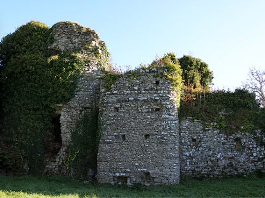

Oliver St John b 1398 Penmark, Glamorgan Wales d 1437 Rouen, Duché de Normandie, France

Sir Oliver St. John 1st Baron St John of Bletso was born on 8 July 1398, in Penmark Castle, Glamorgan, Wales (pictured right), his father, Lord John St John, was 25 and his mother, Elizabeth Paulett, was 11. He married Margaret Beauchamp Duchess of Somerset in 1424, in Bedfordshire, England. They were the parents of at least 2 sons and 5 daughters.
Oliver died in active service in France serving in the hundred years war. He died on 3 April 1437, in Rouen, Seine-Maritime, Upper Normandy, France, at the age of 38.
He is buried at the Church of St. Jacques des Jacobins
LOCATION Rouen, Departement de la Seine-Maritime, Haute-Normandie, France
His father was Lord John St John was born in 1373, in Glamorgan, Wales, United Kingdom as the son of John St. John. He married Elizabeth Paulett in 1394, in Gwlad Morgan, Wales. They were the parents of at least 4 sons and 6 daughters. In 1413, at the age of 50, his occupation is listed as mayor of bordeaux. He died on 25 December 1424, in Glamorgan, Wales, at the age of 51.
His mother was Elizabeth Paulett who was born in 1387, in Bletsoe, Bedfordshire, England, her father, William Paulet, was 19 and her mother, Lady Eleanor de la Mere, was 13. She died in 1421, in Hinton St George, Somerset, England, United Kingdom, at the age of 34.
Source
https://ancestors.familysearch.org/en/LZ6Z-4PJ/sir-oliver-st.-john-1st-baron-st-john-of-bletso-1398-1437